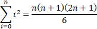

Answer each of the problems below. Your document must be a MS Word document (.doc or .docx), a PDF (.pdf), or a text file (.txt). Do not submit an image file. If you write your solutions by hand, scan them into a PDF and submit that. Check the scan to make sure it is legible! Often there is not enough light on the original so that the scanned document is very hard to read. Submit your file into the D2L submission folder set up for it.
Clearly label each solution with the problem numbers mentioned here.
1. Proof by induction [20 points] Using the proof by induction given in the week 1 summary as a model, show that the following equation is correct.

Remember that a proof by induction has three parts:
Each of these must appear in your proof to get full credit.
2. Combinatorics of subsets [30 points] There is a way to think about subsets as binary strings, that is, a sequence of zeroes and ones. For example, given the set A = {a, b, c, d}, we can think of a binary string as a way of expressing which elements in the set are in a subset. To do this, list the elements in order: a, b, c, d. The first digit of a binary string is 1 if a is in the subset and 0 otherwise; it's the same with the following elements. So the string 1001 represents the subset {a, d}.
3. Proving set equalities (direct proof) [10 points] Recall the definitions of the set operations ∪, ∩, and complement:
Using those defintions, here is a direct proof of one of DeMorgan's laws.
Theorem. (A∪B)C = AC∩BC
Proof. To prove a set equality like this, you show that the left hand side is a subset of the right hand side and vice versa. So first we'll show that (A∪B)C⊆AC∩BC.
x∈(A∪B)C ⇒ x∉A∪B ⇒ x∉A and x∉B ⇒ x∈AC and x∈BC ⇒ x∈AC∩BC.
Next we'll show that AC∩BC⊆(A∪B)C.
x∈AC∩BC ⇒ x∈AC and x∈BC ⇒ x∉A and x∉B ⇒ x∉A∪B ⇒ x∈(A∪B)C.
Using the same approach, please show that AC∪B = (A∩BC)C.
4. Euclid's algorithm for GCD [20 points] Using the row-by-row technique explained in class and in the week 1 summary, apply Euclid's algorithm to find the greatest common divisor of the following pairs of numbers: